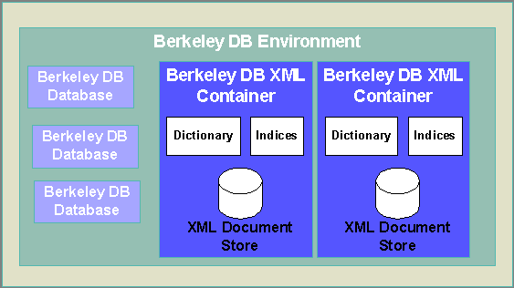

- Berkeley DB Reference Guide:
- Berkeley DB XML


|
|
The client application can optionally associate a Berkeley DB Environment with each container. The Berkeley DB environment offers transaction and resource management functionality, and allows the client application to operate on both XML containers and Berkeley DB databases in the context of a single transaction.
The following figure illustrates the XML container structure, and its relationship to a Berkeley DB Environment and Berkeley DB databases:

The following code example demonstrates how to manipulate containers and documents within a Berkeley DB transaction and environment.
void example()
{
// Create and open a Berkeley DB environment.
DbEnv environment(0);
environment.open(0, DB_CREATE|DB_INIT_LOCK|DB_INIT_LOG|DB_INIT_MPOOL|DB_INIT_TXN,0);
// Create a Berkeley DB transaction.
DbTxn *txn;
environment.txn_begin(0,&txn,0);
// Create and open a DB XML container within the environment.
XmlContainer container(&environment,"test.dbxml");
container.open(txn,DB_CREATE);
try
{
// Insert a document into the container.
XmlDocument document;
std::string content("<book><title>DB</title></book>");
document.setContent(content);
container.putDocument(txn,document);
txn->commit(0); // Commit the transaction
}
catch(DbException &e)
{
txn->abort(); // Abort the transaction
}
catch(exception &e)
{
txn->abort(); // Abort the transaction
}
container.close();
environment.close(0);
}
As a convenience, a container can be configured to automatically transact all update operations when it is opened. All container methods that update the container will create and commit a Berkeley DB transaction if the calling application does not provide one. The following code example illustrates how to open a container in this mode:
void example()
{
// Create and open a Berkeley DB environment.
DbEnv environment(0);
environment.open(0, DB_CREATE|DB_INIT_LOCK|DB_INIT_LOG|DB_INIT_MPOOL|DB_INIT_TXN,0);
// Create and open a DB XML container, specifying Auto Commit
XmlContainer container(&environment,"test.dbxml");
container.open(0,DB_CREATE|DB_AUTO_COMMIT);
// Insert a document into the container.
XmlDocument document;
std::string content("<book><title>DB</title></book>");
document.setContent(content);
container.putDocument(0,document);
container.close();
environment.close(0);
}
|
|
Copyright (c) 1996-2003 Sleepycat Software, Inc. - All rights reserved.